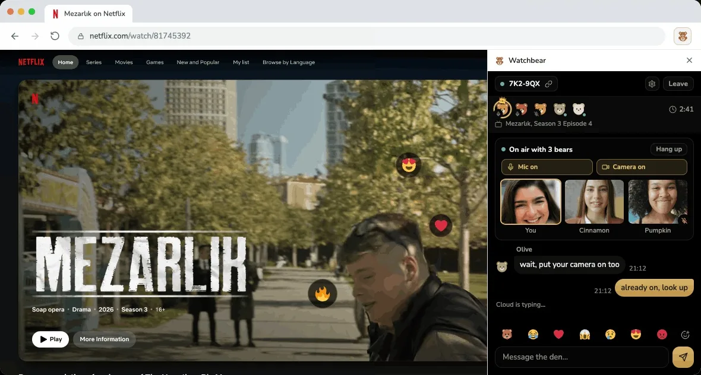

Nonton Netflix dan YouTube bareng teman, di detik yang sama
Watchbear adalah aplikasi nonton bareng online yang berjalan sebagai ekstensi Chrome, dan gratis. Buat room, kirim link-nya, selesai. Kalau ada yang pause, semua ikut berhenti; kalau ada yang skip, semua lompat ke adegan yang sama. Video call dan voice chat ada di samping filmnya.
- Video call gratis
- Sampai 50 orang per room
- Untuk Chrome di laptop dan PC
Nonton bareng online dalam tiga langkah
-
Buat room
Tambahkan Watchbear ke Chrome dan masuk dengan Google. Buka video yang mau ditonton, klik ikon beruang di toolbar, lalu pilih Start a party with this video. Room terbuka di panel samping Chrome, di sebelah pemutar.

Jendela Watchbear. Tampilannya berbahasa Inggris; Start a party with this video artinya mulai party dengan video ini. -
Bagikan undangannya
Di panel, pilih Copy invite link untuk menyalin link, atau Send on WhatsApp untuk langsung mengirimnya lewat WhatsApp. Kode room yang pendek juga bisa dibacakan lewat telepon. Kalau temanmu belum punya Watchbear, dia akan melihat tombol untuk memasangnya dulu, lalu masuk ke video yang sama.
-
Nonton bareng
Siapa pun di room bisa memutar, menjeda, atau mempercepat video, dan semua pemutar mengikutinya. Pesan dan reaksi ada di panel samping, di sebelah video, bukan menutupinya.
Apa bedanya dengan berbagi layar?
Kalau kamu berbagi layar lewat Discord, Zoom, atau Google Meet, filmnya dikirim ulang dalam bentuk terkompresi lewat video call. Gambarnya buram, adegan cepat patah-patah, dan suaranya bisa telat. Di Netflix, perlindungan anti-salin juga sering membuat layar yang dibagikan jadi hitam.
Dengan Watchbear tidak ada yang berbagi layar. Setiap orang memutar film di browser sendiri, dengan kualitas terbaik yang bisa diberikan koneksinya. Yang dikirim antar kalian hanya status pemutar: sedang pause atau tidak, dan di detik berapa.

Bisa dipakai di situs apa saja?
Watchbear tidak bergantung pada daftar situs yang disetujui. Ekstensi ini mencari video utama di halaman yang kamu buka. Netflix punya penyesuaian khusus untuk pemutarnya. Di YouTube dan Vimeo langsung jalan, begitu juga di sebagian besar situs dengan pemutar video standar.
Untuk layanan streaming berbayar lain belum ada penyesuaian khusus, dan pemutar dengan perlindungan anti-salin bisa berperilaku berbeda di tiap situs. Sebelum acara nonton bareng yang besar, coba dulu dengan satu teman.
Video call dan voice chat, gratis untuk semua
- Kamera mulai dalam keadaan mati. Setiap kali masuk room, kameramu mati. Menyalakannya cukup satu klik.
- Sampai 8 orang sekaligus. Satu room muat 50 orang, dan 8 di antaranya bisa menyalakan kamera dan mikrofon pada saat yang sama.
- Koneksi langsung. Suara dan video berjalan langsung antar orang di room, tidak lewat server kami.
- Film tetap nomor satu. Kalau komputernya mulai berat, Watchbear menurunkan kualitas kamera lebih dulu supaya filmnya tidak tersendat.
Dengan Add friend kamu bisa menyimpan orang yang sering nonton bareng, lalu langsung mengundang mereka ke party berikutnya.
Pengganti Netflix Party atau Teleparty
Ekstensi yang dulu bernama Netflix Party sekarang bernama Teleparty. Di Teleparty, hanya pengguna Premium yang bisa menyalakan kamera dan mikrofon. Di Watchbear, video call gratis untuk semua orang; sebagai gantinya, Watchbear belum punya aplikasi HP. Panduan cara nonton bareng online berisi langkah lengkap dan perbandingannya.
Pertanyaan yang sering ditanyakan
Apakah Watchbear gratis?
Ya. Membuat room, bergabung ke room, video call, voice chat, pesan, dan reaksi semuanya gratis, tanpa kartu kredit. Semua orang masuk dengan akun Google.
Apakah bisa dipakai di HP?
Belum. Watchbear adalah ekstensi Chrome, jadi semua orang di room perlu Chrome di laptop atau PC.
Apakah setiap orang perlu akun Netflix sendiri?
Ya. Watchbear tidak mengirim filmnya, hanya membagikan posisi detik setiap pemutar. Setiap orang membuka judulnya dari akun sendiri.
Berapa orang yang muat dalam satu room?
Sampai 50 orang per room. Dari jumlah itu, sampai 8 orang bisa menyalakan kamera dan mikrofon pada saat yang sama.
Apakah ekstensinya ada dalam bahasa Indonesia?
Belum. Tampilan Watchbear tersedia dalam bahasa Inggris, Turki, Spanyol, Portugis, Jerman, Prancis, dan Arab. Di Chrome berbahasa Indonesia, ekstensinya terbuka dalam bahasa Inggris. Panduan cara nonton bareng online menjelaskan arti setiap tombol.
Apakah bisa dipakai di Edge atau Safari?
Untuk saat ini Watchbear hanya tersedia di Chrome Web Store, jadi dipakai dengan Google Chrome.
Pilih film, kirim satu link
Tambahkan Watchbear ke Chrome dan mulai nonton bareng pertamamu. Gratis, cukup dengan akun Google.
Tambahkan ke Chrome, gratis